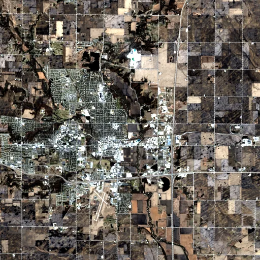

Benchmark / Near-lossless / l8-oli-8 / l8-oli-8-03
l8-oli-8-03
iowa · 2023-03-29 · sample details

Metadata
| id | l8-oli-8-03 |
|---|---|
| source | LANDSAT/LC08/C02/T1 (Landsat Collection 2 Level-1) |
| asset | LANDSAT/LC08/C02/T1/LC08_026031_20230329 |
| crs | EPSG:32615 |
| transform | 442545.0 30.0 0.0 4661085.0 0.0 -30.0 |
| datetime_start | 2023-03-29T16:53:26.667Z |
| datetime_end | 2023-03-29T16:53:26.667Z |
| bands | B1|B2|B3|B4|B5|B6|B7|B9 |
| shape | 8x512x512 |
| dtype | uint16 |
| unit | DN |
| scale | 1 |
| offset | 0 |
| nodata | 0 |
| input_sha256 | 9449f2a830756eed5dc2f8a85cf9b02c99f6ca71b61ead3e68aef2672924408c |
| site | iowa |
| regime | cropland |
| lon | -93.601 |
| lat | 42.031 |
| spacecraft | LANDSAT_8 |
| sensor | OLI_TIRS |
| product_id | LC08_L1TP_026031_20230329_20230405_02_T1 |
| wrs_path | 26 |
| wrs_row | 31 |
| acquired_m | 30 |